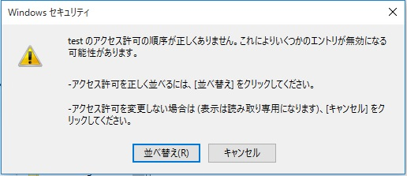

(※ 2017 年 11 月 30 日に Japan Office Support Blog に公開した情報のアーカイブです。)
こんにちは、Office サポートの佐村です。
本記事では、Office 365 ProPlus や、MSDN で提供している C2R インストーラー形式の Office をインストールした後、
特定のレジストリの「アクセス許可」を参照すると警告が表示される現象についてご案内いたします。
現象
64 bit の OS に C2R インストーラー形式の Office をインストールした後、以下の操作を行うと警告が表示されます。
1. レジストリエディターを起動します。
2. 以下のキーまで移動します。
キー : HKEY_LOCAL_MACHINE\SOFTWARE\WOW6432Node
3. 新しいキーを作成します。(例 : test)
4. 作成したキー上で右クリックし 「アクセス許可」 を選択します。
5. 以下の警告が表示されます。

原因
本現象は C2R インストーラー形式で採用している App-V の問題であることを確認しております。
対処方法
警告表示後、「並べ替え」ボタンをクリックしていただくことで、アクセス許可を変更することが可能です。
「キャンセル」ボタンをクリックした場合は、読み取り専用で開かれます。
この対処後はそのキーについては以後の警告が表示されませんが、新しく別のキーを作成 (例 : test2) した場合は、
別のキー (test2) のアクセス許可を参照する際に同じ警告が表示されます。
調査状況
本現象については、現在弊社にて調査中となります。
本情報の内容 (添付文書、リンク先などを含む) は、作成日時点でのものであり、予告なく変更される場合があります。